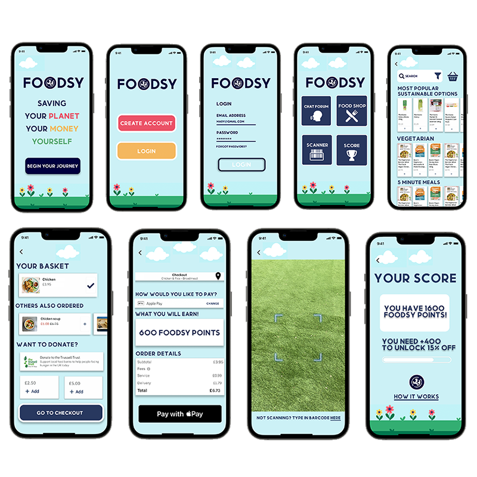

Sustainable Food Choices for Students Project Summary
Project Overview
This project focused on developing a mobile app called "Foodsy" to help students make sustainable food choices. The app aims to educate users about sustainable food options, provide quick and simple solutions, and promote a healthy diet while considering budget constraints. View Foodsy Folio
Key Components
- User Research: Conducted interviews to understand student attitudes towards sustainable food choices. View Research Folio
- User Persona: Created a persona (Brandon Reid, 21-year-old university student) to guide the design process.
- User Journey Map: Developed a map to visualize the user's experience with the app.
- User Flow: Created a flow chart to illustrate the app's navigation and functionality.
- Priority Guides: Established the hierarchy of app sections based on importance.
- Wireframing: Developed initial layouts and designs for the app.
- Component Investigation: Analyzed key features and functionalities of the app.
- Layout Design: Applied Gestalt principles to create an intuitive and visually appealing interface.
- User Testing: Conducted tests with users of varying technological proficiency.
- Accessibility & Usability: Ensured the app was accessible, including for color-blind users.
Key Features of Foodsy
- Barcode scanning for product information
- Meal recommendations
- Price checking and comparison
- Sustainability and nutritional information
- Rewards system for healthy choices
Design Approach
The design focused on creating a user-friendly interface that provides quick access to information about sustainable food choices. The app's layout was designed using Gestalt principles to ensure visual appeal and ease of use.
Conclusion
The Foodsy app prototype aims to address the needs of students looking to make sustainable food choices while managing their time and budget constraints. Through user-centered design and iterative testing, the project resulted in a potentially valuable tool for promoting sustainable eating habits among students.
